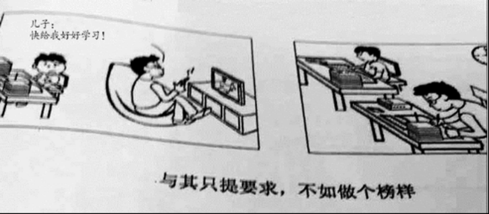

*2016年全国硕士研究生入学统一考试英语试题（一）*
*Section I Use of English*
*Directions:*
*Read the following text**．* *Choose the best word(s) for each numbered blank and mark A**，* *B**，* *C or D on the ANSWER SHEET**．* *(10 points)*
In Cambodia，the choice of a spouse is a complex one for the young male． It may involve not only his parents and his friends，１those of the young women， but also a matchmaker． A young man can 2 a likely spouse on his own and them ask his parents to 3 the marriage negotiations， or the young man’s parents may make the choice of a spouse， giving the child little to say in the selection． 4 ， a girl may veto the spouse her parents have chosen． 5 a spouse has been selected， each family investigates the other to make sure its child is marrying 6 a good family．
The traditional wedding is a long and colorful affair． Formerly it lasted three days， 7 by the 1980s it more commonly lasted a day and a half． Buddhist priests offer a short sermon and 8 prayers of blessing． Parts of the ceremony involve ritual hair cutting， 9 cotton threads soaked in holy water around the bride’s and groom’s wrists ，and 10 a candle around a circle of happily married and respected couples to bless the 11 ．Newlyweds traditionally move in with the wife’s parents and may 12 with them up to a year， 13 they can build a flew house nearby．
Divorce is legal and easy to 14 ，but not common ．Divorced persons are 15 with some disapproval． Each spouse retains 16 property he or she 17 into the marriage， and jointly acquired property is 18 equally． Divorced persons may remarry， but a gender prejudice 19 up ．The divorced male doesn’t have a waiting period before he can remarry 20 the woman must wait the months．
1． [A] by way of [B] as well as [C] on behalf of [D] with regard to
2． [A] adapt to [B] provide for [C]compete with [D] decide on
3． [A] close [B] renew [C]arrange [D] postpone
4． [A] In theory [B] Above all [C] In time [D] For example
5． [A] Although [B] Lest [C] After [D] Unless
6． [A] into [B] within [C] from [D] through
7． [A] sine [B] or [C] but [D] so
8． [A] test [B]copy [C]recite [D] create
9． [A] folding [B] piling [C] wrapping [D] tying
10． [A] lighting [B] passing [C] hiding [D] serving
11． [A] meeting [B] association [C] collection [D]union
12． [A] grow [B] part [C] deal [D]live
13． [A] whereas [B] until [C] for [D] if
14． [A] obtain [B] follow [C] challenge [ D]avoid
15． [A] isolated [B] persuaded [C] viewed [D] exposed
16． [A]wherever [B] however [C] whenever [D]whatever
17． [A] changed [B] brought [C] shaped [D] pushed
18． [A] divided [B] invested [C] donated [D] withdrawn
19． [A]clears [B] warms [C] shows [D] breaks
20． [A]while [B] so what [C]once [D] in that
*Section II Reading Comprehension*
*Part A*
*Directions:*
*Read the following four texts**．* *Answer the questions below each text by choosing A**，* *B**，* *C or D**．* *Mark your answers on the ANSWER SHEET**．* *(40 points)*
*Text 1*
France， which prides itself as the global innovator of fashion， has decided its fashion industry has lost an absolute right to define physical beauty for woman． Its lawmakers gave preliminary approval last week to a law that would make it a crime to employ ultra-thin models on runways．The parliament also agreed to ban websites that“incite excessive thinness” by promoting extreme dieting．
Such measures have a couple of uplifting motives． They suggest beauty should not be defined by looks that end up impinging on health． That’s a start． And the ban on ultra-thin models seems to go beyond protecting models from starving themselves to death –as some have done．It tells the fashion industry that it must take responsibility for the signal it sends women， especially teenage girls， about the social tape –measure they must use to determine their individual worth．
The bans， if fully enforced ，would suggest to woman (and many men )that they should not let others be arbiters of their beauty ．And perhaps faintly， they hint that people should look to intangible qualities like character and intellect rather than dieting their way to size zero or wasp-waist physiques ．
The French measures， however， rely too much on severe punishment to change a culture that still regards beauty as skin-deep-and bone-showing． Under the law， using a fashion model that does not meet a government-defined index of body mass could result in a $85，000 fine and six months in prison．
The fashion industry knows it has an inherent problem in focusing on material adornment and idealized body types． In Denmark， the United States， and a few other countries， it is trying to set voluntary standard for models and fashion images that rely more on peer pressure for enforcement．
In contrast to France’s actions， Denmark’s fashion industry agreed last month on rules and sanctions regarding the age， health， and other characteristics of models ．The newly revised Danish Fashion Ethical Charter clearly states：“We are aware of and take responsibility for the impact the fashion industry has on body ideals， especially on young people．” The charter’s main tool of enforcement is to deny access for designers and modeling agencies to Copenhagen． Fashion Week， which is run by the Danish Fashion Institute ．But in general it relies on a name-and –shame method of compliance．
Relying on ethical persuasion rather than law to address the misuse of body ideals may be the best step． Even better would be to help elevate notions of beauty beyond the material standards of a particular industry．
*21**．* *According to the first paragraph**，* *what would happen in France?*
[A] Physical beauty would be redefined [B] New runways would be constructed
[C] Websites about dieting would thrive [D] The fashion industry would decline
*22**．* *The phrase “impinging on”(Line2 Para2) is closest in meaning to*
[A] heightening the value of [B] indicating the state of
[C] losing faith in [D] doing harm to
*23**．* *Which of the following is true of the fashion industry?*
[A] The French measures have already failed [B] New standards are being set in Denmark
[C] Models are no longer under peer pressure [D] Its inherent problems are getting worse
*24**．* *A designer is most likely to be rejected by CFW for*
[A] setting a high age threshold for models [B] caring too much about models’ character
[C] showing little concern for health factors [D] pursuing perfect physical conditions
*25**．* *Which of the following may* *be the best title of the text?*
[A] A Challenge to the Fashion Industry’s Body Ideals [B] A Dilemma for the Starving Models in France
[C] Just Another Round of Struggle for Beauty [D] The Great Threats to the Fashion Industry
*Text 2*
For the first time in the history more people live in towns than in the country． In Britain this has had a curious result． While polls show Britons rate “the countryside” alongside the royal family． Shakespeare and the National Health Service (NHS) as what makes them proudest of their country， this has limited political support．
A century ago Octavia Hill launched the National Trust not to rescue stylish houses but to save “the beauty of natural places for everyone forever”． It was specifically to provide city dwellers with spaces for leisure where they could experience “a refreshing air”． Hill’s pressure later led to the creation of national parks and green belts． They don’t make countryside any more， and every year concrete consumes more of it ．It needs constant guardianship．
At the next election none of the big parties seem likely to endorse this sentiment． The Conservatives’ planning reform explicitly gives rural development priority over conservation，even authorizing “off–plan” building where local people might object． The concept of sustainable development has been defined as profitable． Labour likewise wants to discontinue local planning where councils oppose development． The Liberal Democrats are silent Only Ukip， sensing its chance， has sides with those pleading for a more considered approach to using green land． Its Campaign to Protect Rural England struck terror into many local Consecutive parties．
The sensible place to build new houses， factories and offices is where people are， in cities and towns where infrastructure is in place． The London agents Stirling Ackroyd recently identified enough sites for half a million houses in the London area alone， with no intrusion on green belts． What is true of London is even truer of the provinces．
The idea that “housing crisis” equals “concreted meadows” is pure lobby talk． The issue is not the need for more houses but， as always， where to put them．Under lobby pressure， George Osborne favours rural new-build against urban renovation and renewal． He favours out-of-town shopping sites against high streets． This is not a free market but a biased one． Rural towns and villages have grown and will always grow． They do so best where building sticks to their edges and respects their character． We do not ruin urban conservation areas． Why ruin rural ones?
Development should be planned， not let trip， After the Netherlands， Britain is Europe’s most crowded country． Half a century of town and country planning has enabled it to retain an enviable rural coherence， while still permitting low-density urban living． There is no doubt of the alternative-the corrupted landscapes of southern Portugal， Spain or Ireland． Avoiding this rather than promoting it should unite the left and right of the political spectrum．
*26**．* *Britain’s public sentiment about the countryside*
[A] is not well reflected in politics [B] is fully backed by the royal family
[C] didn’t start till the Shakespearean age [D] has brought much benefit to the NHS
*27**．* *According to* *P**aragraph 2，the achievements of the National Trust are now being*
[A] largely overshadowed [B] properly protected
[C] effectively reinforced [D] gradually destroyed
*28**．* *Which of the following can be* *inferred* *from* *P**aragraph 3**?*
[A] Labour is under attack for opposing development
[B] The Conservatives may abandon “off-plan” building
[C] Ukip may gain from its support for rural conservation
[D] The Liberal Democrats are losing political influence
*29**．* *The author holds that George Osbornes’s preference*
[A] shows his disregard for the character of rural areas
[B] stresses the necessity of easing the housing crisis
[C] highlights his firm stand against lobby pressure
[D] reveals a strong prejudice against urban areas
*30**．* *In the last paragraph the author show**s* *his appreciation of*
[A] the size of population in Britain [B] the enviable urban lifestyle in Britain
[C] the town-and-country planning in Britain [D] the political life in today’s Britain
*Text 3*
“There is one and only one social responsibility of business” Wrote Milton Friedman， a Nobel Prize-winning economist “That is， to use its resources and engage in activities designed to increase its profits．” But even if you accept Friedman’s premise and regard corporate social responsibility(CSR) policies as a waste of shareholders’s money， things may not be absolutely clear-act． New research suggests that CSR may create monetary value for companies at least when they are prosecuted for corruption．
The largest firms in America and Britain together spend more than $15 billion a year on CSR， according to an estimate by EPG， a consulting firm． This could add value to their businesses in three ways． First， consumers may take CSR spending as a “signal” that a company’s products are of high quality． Second， customers may be willing to buy a company’s products as an indirect may to donate to the good causes it helps． And third， through a more diffuse “halo effect” whereby its good deeds earn it greater consideration from consumers and others．
Previous studies on CSR have had trouble differentiating these effects because consumers can be affected by all three． A recent study attempts to separate them by looking at bribery prosecutions under American’s Foreign Corrupt Practices Act（FCPA）．It argues that since prosecutors do not consume a company’s products as part of their investigations，they could be influenced only by the halo effect．
The study found that，among prosecuted firms，those with the most comprehensive CSR programmes tended to get more lenient penalties． Their analysis ruled out the possibility that it was firm’s political influence， rather than their CSR stand， that accounted for the leniency: Companies that contributed more to political campaigns did not receive lower fines．
In all， the study concludes that whereas prosecutors should only evaluate a case based on its merits， they do seem to be influenced by a company’s record in CSR． “We estimate that either eliminating a substantial labour-rights concern， such as child labour， or increasing corporate giving by about 20% result in fines that generally are 40% lower than the typical punishment for bribing foreign officials，” says one researcher．
Researchers admit that their study does not answer the question of how much businesses ought to spend on CSR． Nor does it reveal how much companies are banking on the halo effect， rather than the other possible benefits， when they decide their do-gooding policies．But at least they have demonstrated that when companies get into trouble with the law， evidence of good character can win them a less costly punishment．
*31**．* *The author views Milton Friedman’s statement about CSR with*
[A]uncertainty [B]skepticism [C]approval [D]tolerance
*32**．* *According to Paragraph 2**，* *CSR helps a company by*
[A]guarding it against malpractices [B]protecting it from being defamed
[C]winning trust from consumers． [D]raising the quality of its products
*33**．* *The expression “more lenient”(line 2**，**Para**．**4)is closest in meaning to*
[A]less controversial [B]more lasting [C]more effective [D]less severe
*34**．* *When prosecutors evaluate a case**，* *a company’s CSR record*
[A]comes across as reliable evidence [B]has an impact on their decision
[C]increases the chance of being penalized [D]constitutes part of the investigation
*35**．* *Which of the following is true of CSR according to the last paragraph?*
[A] The necessary amount of companies spending on it is unknown
[B] Companies’ financial capacity for it has been overestimated
[C] Its negative effects on businesses are often overlooked
[D]It has brought much benefit to the banking industry
*Text 4*
There will eventually come a day when The New York Times ceases to publish stories on newsprint． Exactly when that day will be is a matter of debate． ”Sometime in the future，” the paper’s publisher said back in 2010．
Nostalgia for ink on paper and the rustle of pages aside， there’s plenty of incentive to ditch print． The infrastructure required to make a physical newspaper – printing presses， delivery trucks – isn’t just expensive; it’s excessive at a time when online – only competitors don’t have the same set of financial constraints． Readers are migrating away from print anyway． And though print ad sales still dwarf their online and mobile counterparts， revenue from print is still declining．
Overhead may be high and circulation lower， but rushing to eliminate its print edition would be a mistake， says BuzzFeed CEO Jonah Peretti．
Peretti says the Times shouldn’t waste time getting out of the print business， but only if they go about doing it the right way． “Figuring out a way to accelerate that transition would make sense for them，” he said， “but if you discontinue it， you’re going to have your most loyal customers really upset with you．”
Sometimes that’s worth making a change anyway． Peretti gives the example of Netflix discontinuing its DVD-mailing service to focus on streaming． “It was seen as blunder，” he said． The move turned out to be foresighted． And if Peretti were in charge at the Times? ”I wouldn’t pick a year to end print，” he said ．“I would raise prices and make it into more of a legacy product．”
The most loyal customers would still get the product they favor， the idea goes， and they’d feel like they were helping sustain the quality of something they believe in． “So if you’re overpaying for print， you could feel like you were helping，” Peretti said． “Then increase it at a higher rate each year and essentially try to generate additional revenue．” In other words， if you’re going to make a print product， make it for the people who are already obsessed with it． Which may be what the Times is doing already． Getting the print edition seven days a week costs nearly $500 a year – more than twice as much as a digital – only subscription．
“It’s a really hard thing to do and it’s a tremendous luxury that BuzzFeed doesn’t have a legacy business，” Peretti remarked． “But we’re going to have questions like that where we have things we’re doing that don’t make sense when the market changes and the world changes． In those situations， it’s better to be more aggressive that less aggressive．”
*36**．* *The New York Times is considering ending its print edition partly due to*
[A] the increasing online ad sales [B] the pressure from its investors
[C] the complaints from its readers [D] the high cost of operation
*37**．* *Peretti suggests that* *，**in face of the present situation**，* *t**he Times should*
[A] make strategic adjustments [B] end the print edition for good
[C] seek new sources of readership [D] aim for efficient management
*38**．* *It can be inferred from* *P**aragraphs 5and 6 that a “legacy product”*
[A] helps restore the glory of former times [B] is meant for the most loyal customers
[C] will have the cost of printing reduced [D] expands the popularity of the paper
*39**．* *Peretti believes that**,* *in a changing world*
[A] traditional luxuries can stay unaffected [B] cautiousness facilitates problem-solving
[C] aggressiveness better meets challenges [D] legacy businesses are becoming outdated
*40**．* *which of the following would be the best title of the text?*
[A] Shift to Online Newspapers All at Once [B] Cherish the Newspapers Still in Your Hand
[C] Keep Your Newspapers Forever in Fashion [D] Make Your Print Newspapers a Luxury Good
*Part B*
*Directions:*
*Read the following text and answer the questions by choosing the most suitable subheading from the list A-G for each of the numbered paragraphs (41-45)**．* *There are two extra subheadings**．* *Mark your answers on the ANSER SHEET**．* *(10 point)*
[A] Create a new image of yourself
[B] Decide if the time is right
[C] Have confidence in yourself
[D]Understand the context
[E]Work with professionals
[F]Make it efficient
[G]Know your goals
No matter how formal or informal the work environment， the way you present yourself has an impact． This is especially true in the first impressions． According to research from Princeton University ， people assess your competence， trustworthiness， and likeability in just a tenth of a second， solely based on the way you look．
The difference between today’s workplace and the “dress for success” era is that the range of options is so much broader． Norms have evolved and fragmented． In some settings， red sneakers or dress T-shirts can convey status; in others not so much． Plus， whatever image we present is magnified by social-media services like LinkedIn． Chances are， your headshots are seen much more often now than a decade or two ago． Millennials， it seems， face the paradox of being the least formal generation yet the most conscious of style and personal branding． It can be confusing．
So how do we navigate this? How do we know when to invest in an upgrade? And what’s the best way to pull off one than enhances our goals? Here are some tips:
41_________________________
As an executive coach， I’ve seen image upgrades be particularly helpful during transitions-when looking for a new job， stepping into a new or more public role， or changing work environments． If you’re in a period of change or just feeling stuck and in a rut， now may be a good time． If you’re not sure， ask for honest feedback from trusted friends， colleagues and professionals． Look for cues about how others perceive you． Maybe there’s no need for an upgrade and that’s OK
42________________________
Get clear on what impact you’re hoping to have． Are you looking to refresh your image or pivot it? For one person， the goal may be to be taken more seriously and enhance their professional image． For another， it may be to be perceived as more approachable， or more modern and stylish． For someone moving from finance to advertising， maybe they want to look more “SoHo．” (It’s OK to use characterizations like that )
43 ________________________
Look at your work environment like an anthropologist． What are the norms of your environment? What conveys status? Who are your most important audiences? How do the people you respect and look up to present themselves? The better you understand the cultural context， the more control you can have over your impact．
44 _______________________
Enlist the support of professionals and share with them your goals and context． Hire a personal stylist， or use the free styling service of a store like J． Crew． Try a hair stylist instead of a barber． Work with a professional photographer instead of your spouse or friend． It’s not as expensive as you might think．
45 ________________________
The point of a style upgrade isn’t to become more vain or to spend more time fussing over what to wear． Instead， use it as an opportunity to reduce decision fatigue． Pick a standard work uniform or a few go-to options． Buy all your clothes at once with a stylist instead of shopping alone， one article of clothing at a time．
*Part C*
*Directions:*
*Read the following text carefully and then translate the underlined segments into Chinese**．* *Your translation should be written neatly on the ANSWER SHEET**．* *(10 points)*
Mental health is our birthright． (46) We don’t have to learn how to be mentally healthy****;**** it is built into us in the same way that our bodies know how to heal a cut or mend a broken bone． Mental health can’t be learned， only reawakened． It is like the immune system of the body， which under stress or through lack of nutrition or exercise can be weakened， but which never leaves us． When we don’t understand the value of mental health and we don’t know how to gain access to it， mental health will remain hidden from us． (47) Our mental health doesn’t really go anywhere; like the sun behind a cloud， it can be temporarily hidden from view， but it is fully capable of being restored in an instant．
Mental health is the seed that contains self-esteem –confidence in ourselves and an ability to trust in our common sense． It allows us to have perspective on our lives-the ability to not take ourselves too seriously， to laugh at ourselves， to see the bigger picture， and to see that things will work out． It’s a form of innate or unlearned optimism． (48) Mental health allows us to view others with sympathy if they are having troubles， with kindness if they are in pain， and with unconditional love no matter who they are． Mental health is the source of creativity for solving problems， resolving conflict， making our surroundings more beautiful， managing our home life， or coming up with a creative business idea or invention to make our lives easier． It gives us patience for ourselves． and toward others as well as patience while driving， catching a fish， working on our car， or raising a child．It allows us to see the beauty that surrounds us each moment in nature， in culture， in the flow of our daily lives．
(49)Although mental health is the cure-all for living our lives， it is perfectly ordinary as you will see that it has been there to direct you through all your difficult decisions． It has been available even in the most mundane of life situations to show you right from wrong， good from bad， friend from foe． Mental health has commonly been called conscience， instinct， wisdom， common sense， or the inner voice， We think of it simply as a health and helpful flow of intelligent thought． (50) As you will come to see， knowing that mental health is always available and knowing to trust it allow us to slow down to the moment and live life happily．
*Section III Writing*
*Part A*
*51**．* *Directions:*
Suppose you are a librarian in your university． Write a notice of about 100 words． providing the newly-enrolled international students with relevant information about the library．
You should write neatly on the ANSWER SHEET．
*Do not* sign your own name at the end of the notice． Use Li Ming instead．
*Do not* write the address． (10 points)
*Part B*
*52**．* *Directions:*
Write an essay of 160-200 words based on the following pictures． In your essay， you should
1) describe the pictures briefly
2) interpret the meaning ， and
3) give your comments
You should write neatly on the ANSWER SHEET．(20 points)
Do not sign your own name at the end of the letter． Use Li Ming instead．
Do not write the address． (10 points)
